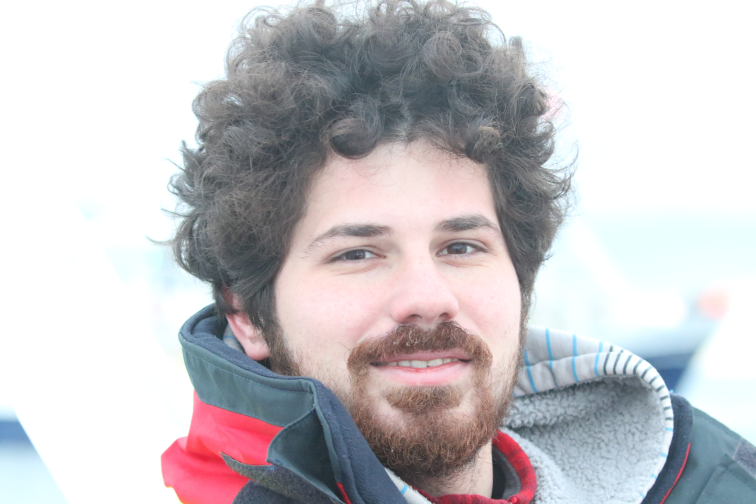
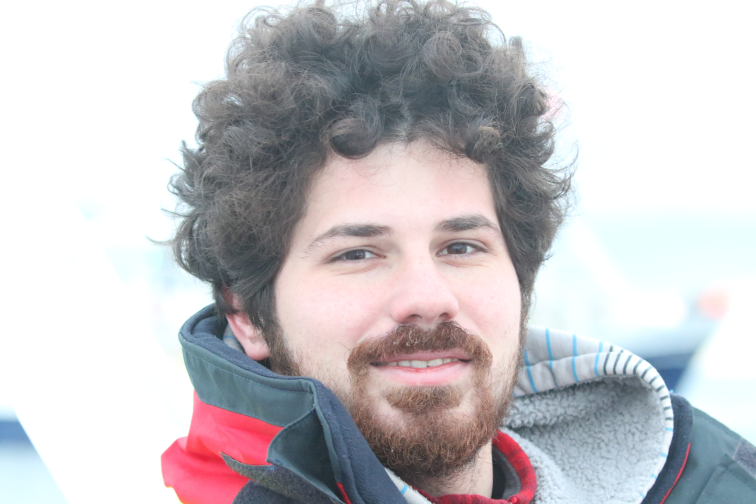

About me
I study vocal communication in animals. I am interested in the information content of animal sounds:


- What kind of information is conveyed by animal signals?
- How is this information encoded?
- Can other individuals [conspecifics, competitors, prey/predator, parasites, ...] extract this information?
- How do animals use information from their soundscape in decision-making?
Current project
I am currently involved in the COPIRAÏT project. This project explores the "social complexity hypothesis", which posits that the cognitive demands of social life are the main driver in the development of complex communication. Taking a comparative approach, we aim to describe social and vocal interactions in social and non-social corvids, but also in human and non-human primates. Based upon an existing multi-task neural network trained to locate and identify vocalising birds, Rookognise, we would like to adapt this architecture to new species, and to add a pipeline for individual and behaviour identification from video recordings.
Stay tuned!
Stay tuned!
Key publications
- 2025 - Unsupervised classification of animal vocalisations using fuzzy clustering Link Preprint
- 2021 - Indication that the behavioural responses of humpback whales to killer whale sounds are influenced by trophic relationships Link
- 2019 - Individual signature in the most common and context-independent call of the Rook (Corvus frugilegus) Link
Contact and links
- E-mail: benjamin.benti@protonmail.com
- GitHub
- OrcID